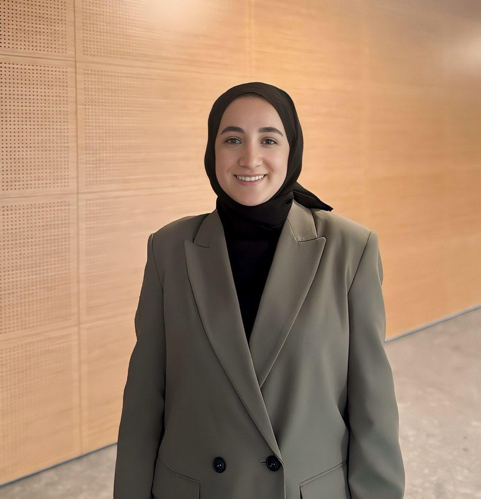
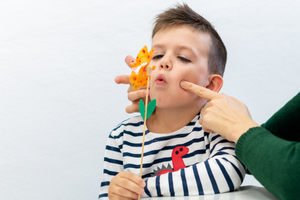

DİL VE KONUŞMA TERAPİSTİ SELMA DUVARCI
Merhaba, ben Dil ve Konuşma Terapisti Selma Duvarcı. Alanımda 8 yıllık klinik deneyimle çocuklara ve ailelerine destek sunmaktayım. Mesleki yolculuğum boyunca hastaneler, rehabilitasyon merkezleri ve çeşitli klinik ortamlarda çalışma fırsatı buldum; farklı yaş gruplarıyla kapsamlı bir uygulama deneyimi edindim.
İstanbul Atlas Üniversitesi Dil ve Konuşma Terapisi bölümünden mezun oldum. Eğitim ve meslek hayatım süresince kongre, seminer ve çeşitli mesleki eğitim programlarına katılarak bilgi ve becerilerimi sürekli geliştirmeye özen gösterdim.
PROMPT ve DIR® FLOORTIME eğitimlerimi tamamladım ve terapilerimde bu teknikleri aktif olarak kullanmaktayım. Bilimsel temelli, birey merkezli ve aile katılımını önemseyen bir yaklaşımla her danışanım için süreci kişiye özel planlamayı önemsiyorum.
Amacım; çocukların iletişim becerilerini güçlendirmek, kendilerini daha rahat ve özgüvenli ifade edebilmelerine destek olmak ve ailelerle iş birliği içinde sürdürülebilir ilerleme sağlamaktır.
Sertifikalarım
Uyguladığım Terapi Yöntemleri
PROMPT
PROMPT (Prompts for Restructuring Oral Muscular Phonetic Targets), konuşma seslerinin doğru üretimi için ağız yapılarının doğru pozisyonlanmasını destekleyen, kanıta dayalı bir terapi yaklaşımıdır.
Detaylı BilgiDIR® FLOORTIME
DIR® FLOORTIME, çocuğun duygusal ve ilişkisel gelişimini destekleyen, oyun temelli bir yaklaşımdır. Çocuğun ilgi alanlarından yola çıkarak iletişim ve sosyal becerileri güçlendirir.
Detaylı BilgiHizmetlerimiz

Konuşma Sesi Bozukluğu (Artikülasyon, Fonolojik)
Konuşma seslerinin yanlış üretilmesi durumunda bireye özel terapi planı uygulanır.
Devamını Oku →
Kekemelik & Hızlı - Bozuk Konuşma
Akıcılık sorunlarına yönelik kanıta dayalı ve kişiye özel terapi süreçleri.
Devamını Oku →
Gecikmiş Dil ve Konuşma
Yaşıtlarına göre dil gelişimi geride olan çocuklar için erken müdahale programları.
Devamını Oku →Otizm ve Dil ve Konuşma Terapisi
Otizmli bireylerde iletişim becerilerini artırmaya yönelik bütüncül yaklaşımlar.
Devamını Oku →

Ses Bozuklukları
Ses kısıklığı, nodül ve diğer ses problemlerine yönelik profesyonel ses terapisi.
Devamını Oku →
Afazi
Edinilmiş dil bozukluklarında iletişim becerilerini yeniden yapılandırma desteği.
Devamını Oku →
Çocukluk Çağı Konuşma Apraksisi
Konuşma planlama ve motor becerileri destekleyen yapılandırılmış terapi.
Devamını Oku →
Dudak Damak Yarıklığına Bağlı Dil ve Konuşma Bozuklukları
Dudak damak yarıklığı olan bireylerde konuşma ve rezonans desteği.
Devamını Oku →